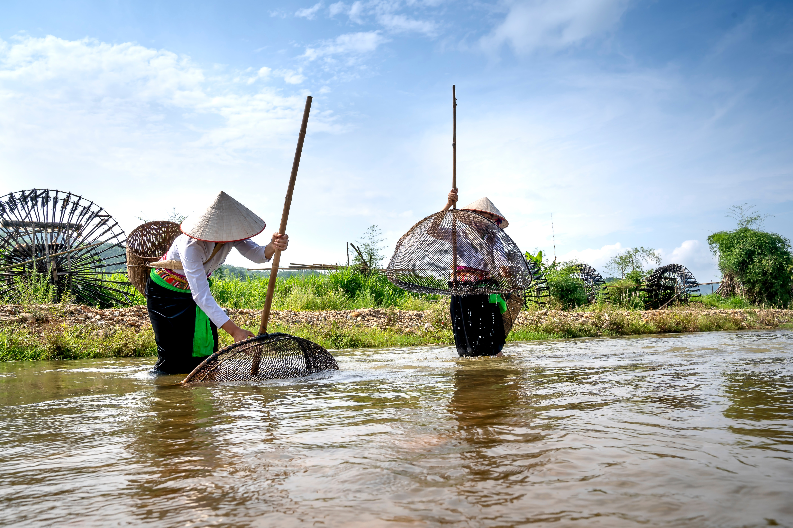
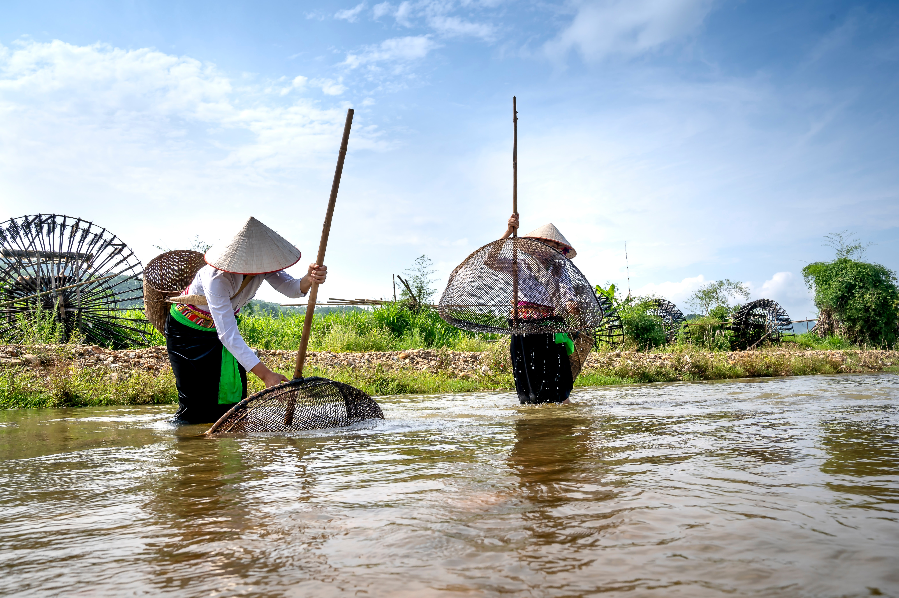
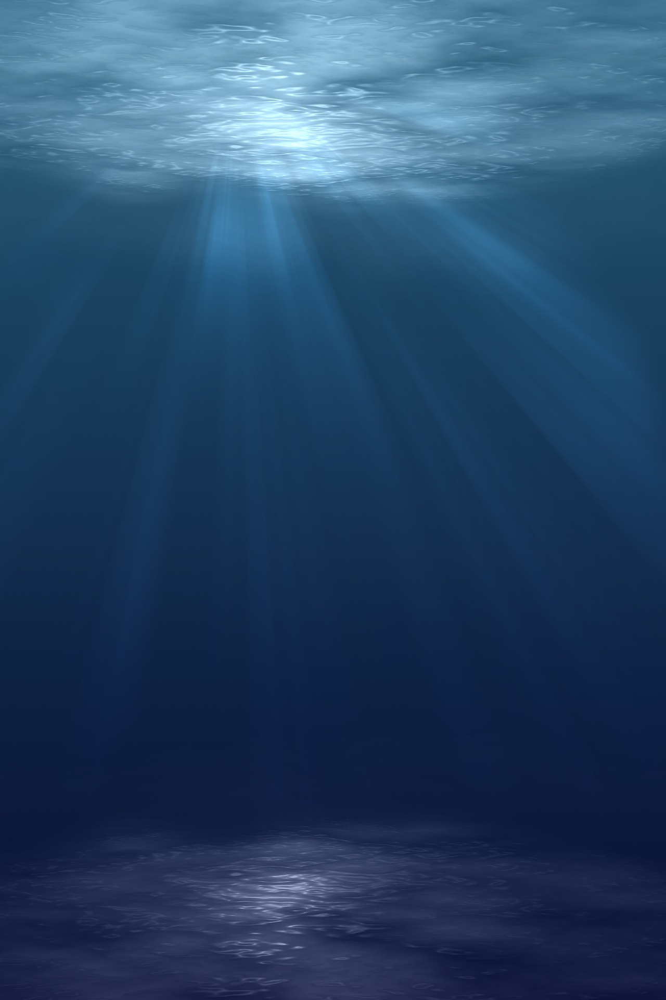
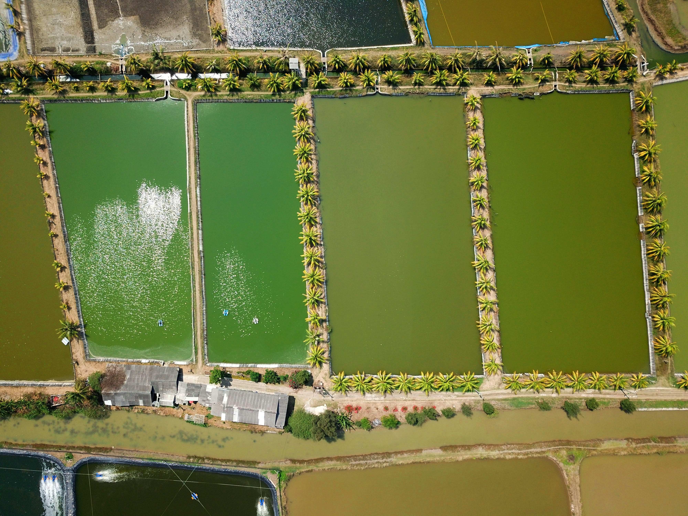

However, being at takeoff and since a living organism is to be reared in a controlled environment, a number of factors have to be fulfilled by an intending the Virgo project.
These factors can be categorized as those needed for the successful growth of a fish and institutional requirements for the success of the program.
There are 3 major requirements for the beneficiary pond suitability for fish farming as described below:
Selection Criteria and Technical Requirements
 

In order for the fish farming project to succeed, it was important to undertake proper selection of farmers/ beneficiaries.
Water availability:

Good sites should have good sources of water visible like streams, springs available at least throughout the year in because fish lives and does everything in water. It is the most critical factor to consider.
Nature of soil:
Soils are important in that; they hold the water that fish live in. the soils to consider are those that are a mixture of clay-loam. Pure clay cracks during hot weather and is very minimal in nutrients hence it should not be considered. Sandy soil is not desirable because water easily percolates through and hence a lot of water is lost. Areas with sandy soils and extremely clay soils should be therefore avoided.
Size and shape of the pond:
For commercialization of the enterprise, ponds need to be at least more than 300m2. The ponds must be rectangular for easy management, with a gentle slope for easy drainage, dykes must be well compacted and with a slope at least of 2:1. The minimum water depth should be 1M at the outlet and 0.8M at the inlet. Inlet and outlet pipes must be fitted well. The inlet and outlet pipes should be well screened.
THE BEST AS LONG AS AQUACULTURE IS CONCERNED

https://Virgo.youtube.com 
www://virgo.instagram.com 
www://virgo04.twitter.com 
www://virgo.facebook.com 
virgo04@gmail.com
- cookies
- help
- services
- jobs
- partnership